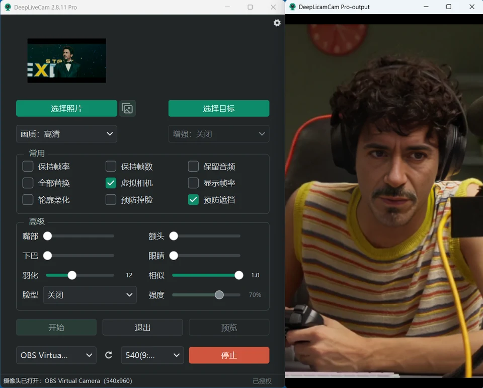
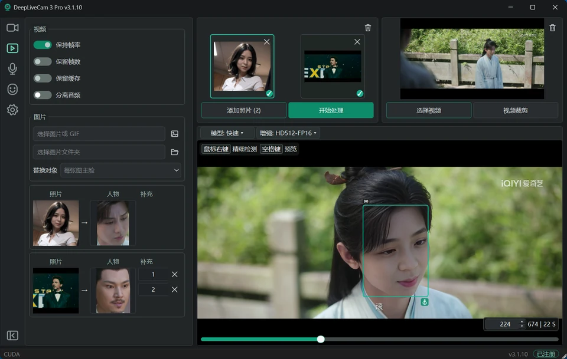
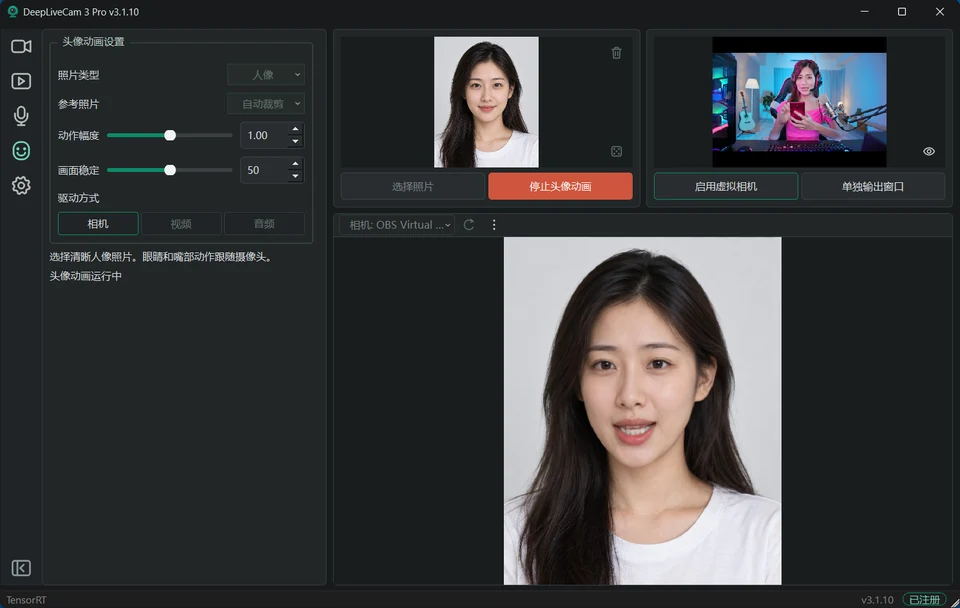

功能介绍


实时换脸
每个表情，实时呈现。
选择人像，打开摄像头。转头、微笑、说话的同时，按画面调整融合、嘴部保留与遮挡保护。
只需三步就可开始
- 选择照片
- 开启直播
- 启用虚拟相机
直接接入视频通话与直播
将处理后的画面作为摄像头输入，送入 OBS、直播伴侣、YYCam 等直播软件，也用于 WhatsApp、Telegram 等社交软件通话。
DeepLiveCam Pro内置虚拟摄像头
OBS / 直播伴侣 / YYCam等直播软件WhatsApp / Telegram等社交软件通话

视频与图片
从一张照片，到一部作品。
先预览视频，选中要替换的人物，再开始处理。图片支持单张、批量处理，也支持多人替换。
素材留在你的电脑。
所有文件及实时画面处理都在本地完成，不会上传云端。只有模型下载、软件更新及注册需要联网。

实时变声
声音，也有你的风格。
实时转换麦克风声音。只需 5 秒目标音频，就能实时换成目标的音色；还能加载自己用 RVC 训练的模型。

头像动画
让照片，跟随你的表情。
用摄像头画面实时驱动人像、卡通画与宠物照片，微笑、眨眼、口型，让静态形象动起来。支持实时录屏。
EDITIONS
版本功能对照
| 项目 | 标准版DeepLiveCam 3 Pro | 经典版DeepLiveCam 2 Pro |
|---|---|---|
| 操作系统 | Windows 10 / 1164 位 · 22H2 或更新版本 | Windows 10 / 1164 位 |
| 显卡型号 | ||
| NVIDIA | GTX 16 / RTX 20 系列起 | GTX 950 桌面版起高清 / 超清：GTX 16 / RTX 20 系列起 |
| AMD | 支持 DirectX 12 的兼容型号普通、清晰画质 | 不支持 |
| 主要功能 | ||
| 实时摄像头换脸 | ✓ | ✓ |
| 视频换脸与目标人物选择 | ✓ | ✓ |
| 单张图片换脸 | ✓ | ✓ |
| 文件夹批量图片处理 | ✓ | 不支持 |
| 保留视频原音频 | ✓ | ✓ |
| 直播多人换脸 · 最多 3 人 | ✓ | ✓ |
| 多照片融合 | ✓ | ✓ |
| 遮挡保护与预防掉脸 | ✓ | ✓ |
| 内置虚拟摄像头 · Windows 11 | ✓ | ✓ |
| 高清 / 超清画质 · NVIDIA | ✓ | ✓ |
| 实时变声 · NVIDIA | ✓ | 不支持 |
| 参考音频 / RVC V2 声线 · NVIDIA | ✓ | 不支持 |
| 人物 / 动物头像动画 · NVIDIA | ✓ | 不支持 |
| 详细介绍 | ||